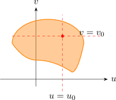
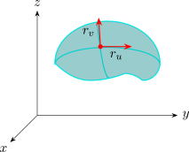
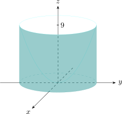

3.14 Surface Area
Recall: A parametric surface \(S\) defined by a vector valued function of two parameters \[x = x(u,v)\hspace {0.5cm},\hspace {0.5cm} y = y(u,v)\hspace {0.5cm}, \hspace {0.5cm} z = z(u,v)\]
\[r(u,v) = x (u,v) \,\textbf {i} + y (u,v)\, \textbf {j} + z (u,v)\, \textbf {k}\]
|  |  |
Let \(P_0\) be a point on the surface with position vector \(r(u_0,v_0)\).
\[r_v = \frac {\partial x}{\partial v}(u_0,v_0)\,\textbf {i} + \frac {\partial y}{\partial v}(u_0,v_0)\,\textbf {j} + \frac {\partial z}{\partial v}(u_0,v_0)\,\textbf {k}\]
\[r_u = \frac {\partial x}{\partial u}(u_0,v_0)\,\textbf {i} + \frac {\partial y}{\partial u}(u_0,v_0)\,\textbf {j} + \frac {\partial z}{\partial u}(u_0,v_0)\,\textbf {k}\]
\[\Big | \Delta u \hspace {0.1cm} r_u \times \Delta v \hspace {0.1cm} r_v\Big | = \Big | r_u \times r_v\Big | \hspace {0.1cm}\Delta u \hspace {0.1cm} \Delta v\]
So an approximation to the area \(S\) \[\text {i.e}\hspace {0.4cm} \sum ^m_{i=1}\sum ^n_{j= 1}\big | r_u \times r_v\big | \hspace {0.1cm}\Delta u \hspace {0.1cm} \Delta v\]
which is the Riemann of the \[\iint \limits _D \big | r_u \times r_v\big | \hspace {0.1cm} du\hspace {0.1cm} dv\]
If a smooth parametric surface is given by \[r(u,v) = x (u,v)\, \textbf {i} + y (u,v) \,\textbf {j} + z (u,v) \,\textbf {k}\] and \(S\) is covered just once as \((u,v)\) ranges through \(D\), then the surface area of \(S\)
\[A(S) = \iint \limits _D \big | r_u \times r_v \big | \hspace {0.1cm}dA\] where \(r_u\hspace {0.1cm}, \hspace {0.1cm} r_v\) are as before.
Solution.
We let the parametric equation of the sphere be represented by \(x = a\sin \phi \cos \theta \hspace {0.2cm}, \hspace {0.2cm} y = a\sin \phi \sin \theta \hspace {0.2cm} ,\\ \hspace {0.2cm} z = a\cos \phi \)
\[r(\phi , \theta ) = a \sin \phi \cos \theta \,\textbf {i} + a \sin \phi \sin \theta \,\textbf {j} + a \cos \phi \,\textbf {k}\]
We need \(r_{\phi }, \hspace {0.3cm} r_{\theta }\)
\begin {align*} r_{\phi } \times r_{\theta } & = \begin {vmatrix} \textbf {i} & \textbf {j} & \textbf {k}\\ a\cos \phi \cos \theta & a \cos \phi \sin \theta & -a \sin \phi \\ -a\sin \phi \sin \theta & a \sin \phi \cos \theta & 0\\ \end {vmatrix}\\\\ & = a^2\sin ^2\phi \cos \theta \,\textbf {i} + a^2 \sin ^2\phi \sin \theta \,\textbf {j} + a^2 \sin \phi \cos \theta \,\textbf {k}\\ \end {align*}
\begin {align*} \big |r_{\phi } \times r_{\theta }\big | & = \sqrt {a^4\sin ^4\phi \cos ^2 \theta + a^4 \sin ^4\phi \sin ^2\theta + a^4 \sin ^2 \cos ^2\phi }\\ & = a^2\sqrt {\sin ^4 \phi + \sin ^2\phi \cos ^2 \phi }\\ & = a^2 \sqrt {\sin ^ \phi }\\ & = a^2 \sin \phi \\ \end {align*}
\begin {align*} \text {Area of the sphere}\hspace {1cm} A & = \iint \limits _D \big | r_{\phi } \times r_{\theta }\big |\hspace {0.1cm}d\theta \hspace {0.1cm} d\phi \\ & = \int ^{2\pi }_0 \int ^{\pi }_0 a^2\hspace {0.1cm}\sin \phi \hspace {0.1cm} d\phi \hspace {0.1cm} d\theta \\ & = 4\pi a^2\\ \end {align*}
In the case of \(z = f(x,y)\).
\(x = x\hspace {0.4cm}, \hspace {0.4cm} y = y\hspace {0.4cm}, \hspace {0.4cm} z = f(x,y)\)
\(\displaystyle {r_x = \textbf {i} + \Bigg ( \dfrac {\partial f}{\partial x}\Bigg )\,\textbf {k}}\)
\(\displaystyle {r_y = \textbf {j} + \Bigg ( \dfrac {\partial f}{\partial y}\Bigg )\,\textbf {k}}\)
\begin {align*} r_x \times r_y & = \begin {vmatrix} \textbf {i} & \textbf {j} & \textbf {k}\\\\ 1 & 0 & \dfrac {\partial f}{\partial x}\\\\ 0 & 1 & \dfrac {\partial f}{\partial y}\\ \end {vmatrix}\\\\ & = \frac {-\partial f}{\partial x}\,\textbf {i} - \frac {\partial f}{\partial y}\,\textbf {j} + \textbf {k}\\ \end {align*}
\[ A(S) = \iint \limits _D\sqrt {1 + \Bigg (\dfrac {\partial f}{\partial x}\Bigg )^2 + \Bigg (\dfrac {\partial f}{\partial y}\Bigg )^2 }\hspace {0.1cm}dA\]
Find the area of the part of the paraboloid \(z = x^2 + y^2\) that lies under \(z = 9\).

\begin {align*} A(S) & = \iint \limits _D \sqrt {1 + (2x)^2 + (2y)^2}\hspace {0.1cm} dA\\ & = \iint \limits _D\sqrt {1 + 4x^2 + 4y^2}\hspace {0.1cm}dA\\ & = \int ^3_0\int ^{2\pi }_0 \sqrt {1 + 4r^2}\hspace {0.1cm} r\hspace {0.1cm}d\theta \hspace {0.1cm}dr\\\\ & = \frac {\pi }{6}\big ( 37\sqrt {37} - 1 \big )\\ \end {align*}
Questions on this section
Stuck on something here? Ask below and it stays attached to this topic.